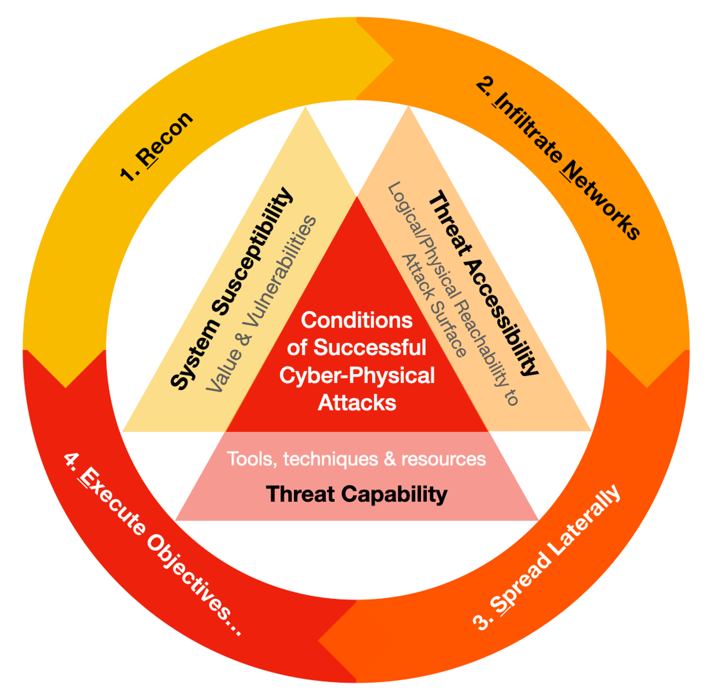
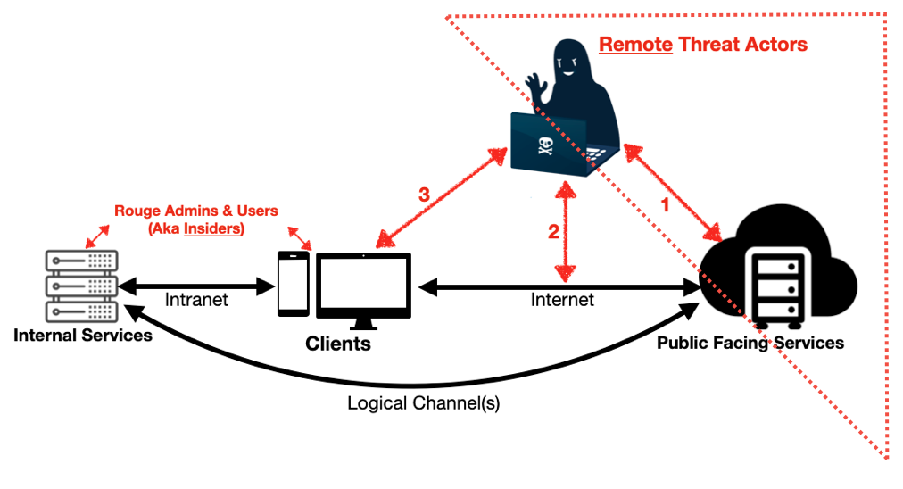
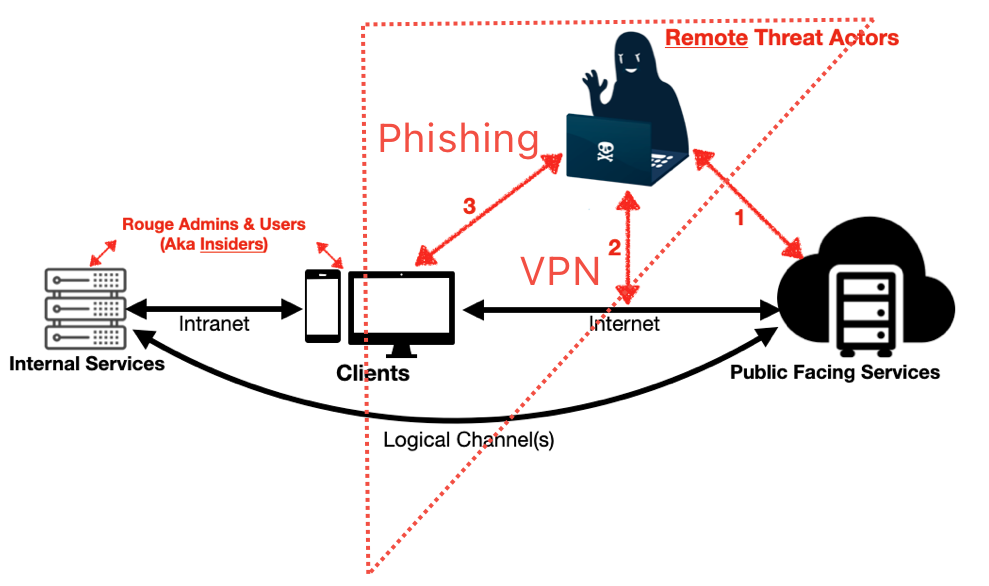
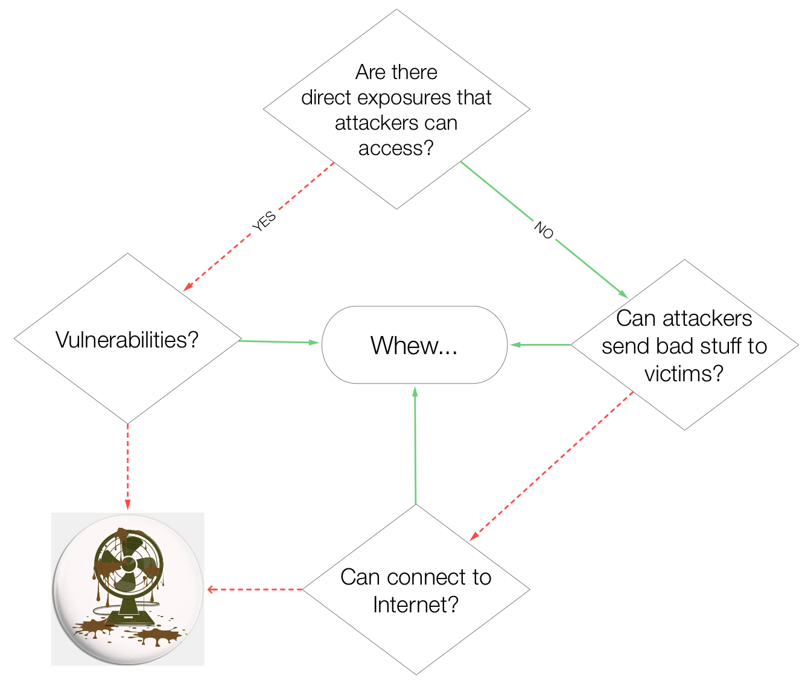

Attack Life Cycle
Attackers RINSE & repeat...

The Necessary & Sufficient conditions of any successful attacks is at the center of this Attack Life Cycle.
- Reconnaissance - Gather information to assess
Value & Vulnerabilitiessum up to `System Susceptibility - Infiltrate Networks -
Threat Accessibilityrefers to the means to get into target networks - Spread Laterally - Stay within target networks undetected depends on
Threat Capabilitywhich requires tools, techniques & resources - Execute Objectives - to steal which impacts Confidentiality, tamper with system & data Integrity & deny Availability of data & networks. For critical Cyber Physical systems, it can threaten lives.
Direct vs Indirect Access

An example of direct access from 1.Recon to 4.Execute Objectives: Poor web-server configuration leads to exposure of unprotected sensitive files that can be downloaded by anyone. Low hanging fruits for adversaries!

From 1.Recon to 2.Infiltrate Networks: Attackers use LinkedIn to figure out who are the HR executives, send deceptive emails to lure them (Phishing) to click on malicious links or execute malware. Just need one employee to give attackers that chance to gain control over a HR asset when the malware infects like a Patient Zero & persists within that endpoint. Why go through all that trouble when attackers can buy access into corporate Virtual Private Network?

The flow chart covers both direct & indirect access. The attackers have the skills to carry out intrusions from either way. Internet gives them the access to reach vulnerable assets & victims.
Success or failure of cyber-physical attack depends on Necessary and Sufficient prerequisites. Attacks are effective only when all conditions are fulfilled, yet it will fail if any single condition is disrupted. For instance, when employees are vigilant, they report the phishing emails. With robust multi-factor VPN authentication, 1st factor of ID & password sold on dark web is less threatening.
Disrupt Attacks by Design
Instead of reacting to yet another vulnerability announcement, another patching exercise (e.g. Microsoft Patch Tuesday) or worst, automatic updates that disrupted millions of Windows hosts. Basically stuck in a Chase-After-Bad posture, which is unending & costly.
I always reuse this simple lesson plan for my interns:
- Sign up a free cloud Linux server but make sure the admin account for provisioning the virtual server has strong or multi-factor authentication.
- Create a small virtual Linux server & with a strong password.
- Figure out where or setup the audit log such that they can review authentication attempts.
- Start a console session that showed live audit events for monitoring.
- They will notice that within a short while, many failed secure shell or SSH attempts will start appearing in that console session earlier.
Learning point: with a weak passwords, the brute-forced attempts would have led to successful admin access if they had configured to allow super user (aka root) to SSH.
- I point them to a couple of free private network (similar to Virtual Private Network but different in terms of network architecture) like ZeroTier & Twingate.
- They reconfigured secure shell server to only accept connections from the same private network.
- NO MORE brute-force attempts.
- Even if the passwords were weak, attackers cannot reach the server to test it.
Designing with Threat Accessibility in mind enables us to disrupt attacks effectively while maintaining both usability and security.️
What about the other two conditions; System Susceptibility & Threat Capabilities ? They contribute to our ending pains!
- Getting rid of vulnerabilities by patching is very challenging & sometimes disastrous. I'm not suggesting "don't need to patch", but we have to exercise caution and careful consideration before implementing any changes to production systems.️
- Hypothetically, if Windows were free of bugs, there would still be numerous system tools & mechanisms susceptible to misuse by attackers.
- Those are inherent features rather than defects. Complex operating systems, including Windows, Linux, MacOS & mobile ones, are all have such vulnerabilities.️
- Vulnerabilities cover both software bugs & poorly designed features that can be abused.
- Threat actors are extremely motivated, creative & resourceful. They use free or cheap tools to evade costly controls & monitoring operations at a fraction of the cost! We have NO control over this aspect.
Avoid Single-Factor Authentication
Single-factor authentication refers to the process of verifying identity through the use of one identifier, such as an email address or username, coupled with a password.️ Upon obtaining these credentials, there is a significant risk that password reuse will grant Threat Actors access to other services for affected users.️
- Malicious actors have the ability to gain unauthorised access to email accounts and assume control over online identities.️
- A corporate VPN relying on single-factor authentication grants attackers unfiltered access to an organization's internal resources.️
We can disrupt such unauthorised access with either Multi-Factor authentication or replacing passwords with passkeys.
Avoid Admin Ports Exposure
Admin ports like SSH, RDP, VNC should never be accessible over the Internet. Even access to web admin pages should be limited to few IP addresses whenever possible.
There are many freemium software private networks like ZeroTier, Twingate, Tailscale & the likes to limit access. Instead of using public Internet address, simply configure such remote admin services to use private network address accessible to a few admin endpoints.
Avoid Signature-based Controls
The Crowdstrike Channel File incident is a prime example of Signature-based control. Updates are needed to counter whatever new offensive techniques.
These controls are primarily designed to counteract attack techniques and address hosts or network vulnerabilities. Due to the ever-evolving nature of offensive tactics & techniques, continuous updating is essential to keep pace with new threats - thereby classified as reactive or Tit-for-Tat controls.️ Malware & offensive techniques are part of an infinite set, such controls will never keep up.
More examples of Signature-based Tit-for-Tat Controls (non-exhaustive) :
- Anti-virus
- Web App Firewall
- Network Intrusion Detection
Encryption facilitates evasion for malware. Malicious network traffic can be obscured through encryption, with a significant proportion of Internet communications encrypted.️
Apply Design Thinking & ALC
Now that you have some idea of the pitfalls to avoid, we are ready to use this scenario of a tech refresh for a hypothetical law firm, to come up with a more usable & secure network, by applying Design Thinking & Attack Life Cycle mental model.
Recap
- Attackers will RINSE & repeat within this Attack Life Cycle.
- They can attack directly at services or indirectly, by getting into target networks & work their way within to meet their offensive objectives (steal, tamper & deny access to data & systems).
- Although network attacks seem like a very complex topic, there are only three conditions necessary for any successful attacks.
- It is sufficient to disrupt attack by dealing with any one of the conditions, but keeping up with system vulnerabilities by patching & changing offensive techniques is very difficult for us.
- We can disrupt attacks by design to make systems usable & accessible to legitimate users but much harder to intrude, instead of just reacting to vulnerabilities & threat techniques.
- A concrete scenario was used to illustrate how it can be done.